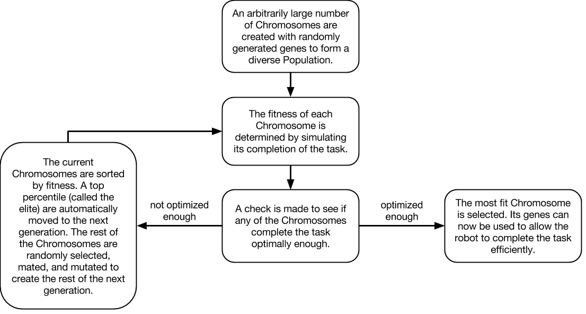
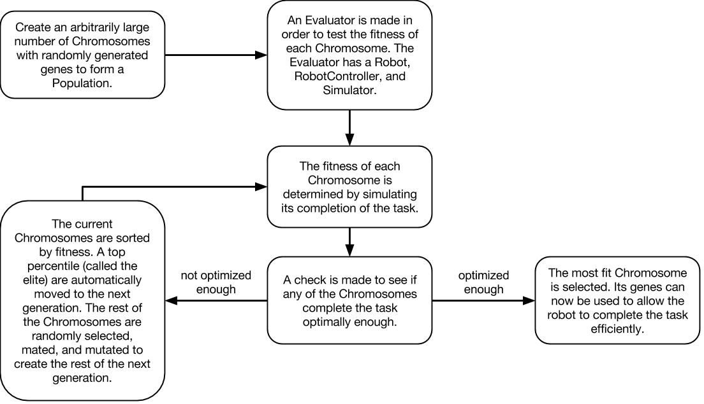
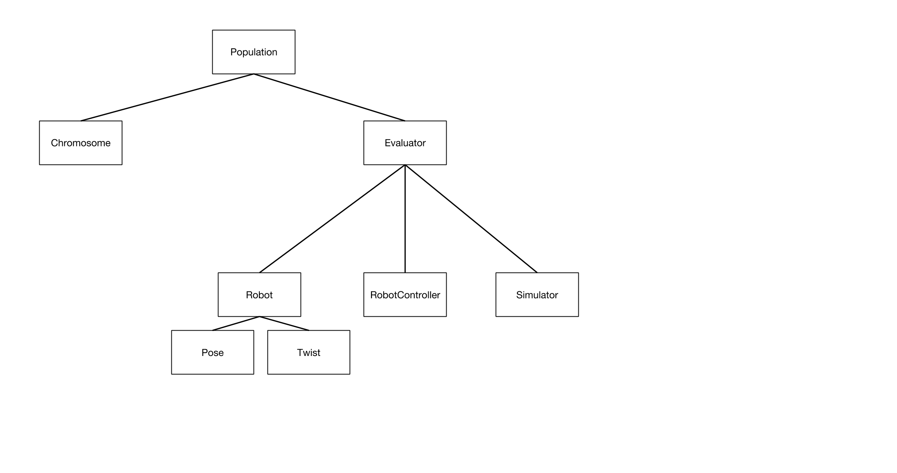

Genetic Algorithms and Multi-Robot Interaction
Project: Nevo explores the field of genetic algorithms and applies them to multiple robots in an attempt to complete a given task. By using a learning approach similar to natural selection in nature, robots can evolve to become more optimized cooperating or competing towards a particular objective.
Our system can take in one of several different tasks, each defined by a fitness function and a model, and using a genetic algorithm output a set of coefficients (genes) that can be used by a Neato to accomplish the given task optimally. For any task, our system creates virtual robots represented in the genetic algorithm as genes, and uses a virtual simulator to determine the best robot by its genes. Eventually through simulation and evolution on these virtual robots, the best set of genes representing the most fit robot will be found. We then translate these genes (coefficients) onto Neatos, and watch as they achieve the task live in the real world.
Genetic Algorithms 101
The concept of genetic algorithms can be broken down into four main steps:
Optimized Interactions
Easy:
Waypoint Navigation
One robot finds it way to a goal starting from a random location. Consists of one population of organisms with 4 genes each, with each organism representing one robot.
Moderate:
Line Up
Three robots starting at random locations can move in accordance with each other to form a straight line. Consists of one population of organisms with 12 genes each, with each organism representing all three robots cooperating with each other.
Hard:
Tag
Two robots play the game of tag with each other, with one trying to tag the other and the other attempting to run away. Consists of two populations of organisms with 4 genes each, with each organism repesenting one robot and each population representing one of the two competing sides.
Results
Insert final video containing all tasks here (Kevin will make it, just needs nice film of the tasks)
System Architecture
Task
This is the main organizing class of our genetic algorithm architecture. Within the Task class, there is a definition for how organisms simulate the task, how organisms are evaluated for fitness, and this is also where the GeneticAlgorithm object is created. Note that this class is meant to absorb all idiosyncracies that may occur when using a genetic algorithm to solve different tasks. This allows for the rest of the software to be the same across all different applications of the genetic algorithm.
Tasks have 4 user-facing commands. `--train` starts the training of the task, specified by the hyperparameters defined in the `train` method. `--visualize` opens the matplotlib visualizer. Organisms need to be first defined before visualizations can happen. `--gazebo` uses our model robots and publishes events to ROS running Gazebo. `--real` is similar but publishes to the real world, where robot positions are defined by April tags.
GeneticAlgorithm
The GeneticAlgorithm class oversees the main training loop, prompting the Generation to simulate the task, evaluate fitness, and then evolve. In our implementation, the GeneticAlgorithm also logs data about the most fit organisms in each generation.
Generation
The Generation class holds the genetics of every organism and the functionality for mutating, crossing over, evolving, and evaluating fitness.
Simulator
The Simulator creates a two dimensional representation of an organism's actions as dictated by its genetics. This gives us a deeper insight into our genetic algorithm by illuminating the frame-by-frame behavior of individual organisms rather than just a quantified fitness.
Robot
The Robot, as represented in our diagram, actually represents two unique classes within our genetic algorithm. The Robot can be either simulated, which is used for training faster than real-time would allow and visualizing in 2D, or real, which allows us to implement our highly fit genetics on a physical robot to see how it performs. Our non-simulated robot can toggle between communicating with Gazebo and with the real world (AprilTags) through a flag.
Our Story
Project Story 1 - Playing with Genetic Algorithms
4/20/2017
To break this problem down, we needed to implement our own genetic algorithm so that we can train our robots in simulation. After doing some research, we were able to find a Hello World for genetic algorithms.
We learned that genetic algorithm consists of several parts:
- -Population. A collection of chromosomes. This contains all the permutations that we want to consider for our algorithm. Each permutation is encoded as a gene in a chromosome.
- -Chromosome/gene. These are strings that consists of encoded instructions. Genes directly affect the performance of the organism during its task.
- -Fitness. Fitness provides us with information on how well a gene performs in the environment. More specifically, fitness defines what it means for our robot to be successful at our task of choice. In the algorithm, the fitness function calculates this value and helps us evaluate which genes propagate in the next generation.
- -Crossover. Crossover is one channel for chromosomes to produce stronger progeny. Two chromosomes undergo crossover in our evolution function, which allows for the creation of a new gene that may potentially carry the success of its parents.
- -Mutation. The final step to produce the next generation is to randomly proceed through the Chromosomes and make random changes to their genes. This adds genetic diversity to the Population, which allows the GA to better discover genes with high fitness.
The following is the main run function inside of our RobotController class that uses the genetics of a Robot to send velocity commands.
def run(self, duration):
"""
Main run function.
duration : float - In seconds
"""
end_time = time.time() + duration
try:
while time.time() < end_time:
curr_x, curr_y = self.robot.get_position()
goal_x = 0.0
goal_y = 0.0
# Calculate difference between robot position and goal position
diff_x = goal_x - curr_x
diff_y = goal_y - curr_y
try:
# Calculate angle to goal and distance to goal
diff_w = math.atan2(diff_y, diff_x)
diff_r = math.sqrt(diff_x**2 + diff_y**2)
except OverflowError:
print diff_x, diff_y
# Define linear and angular velocities based on genes
a1, b1, c1, a2, b2, c2 = self.genes
forward_rate = a1*diff_w + b1*diff_r + c1*diff_r**2
turn_rate = a2*diff_w + b2*diff_r + c2*diff_r**2
# Set linear and angular velocities
self.robot.set_twist(forward_rate, turn_rate)
except KeyboardInterrupt:
pass
Genetic algorithms are great at tackling problems with well-defined metrics of success, but have little notion of how to actually solve the problem. In this regime, a genetic algorithm will continue to mate, mutate, and interchange variables within the problem until an optimal solution is found. All the while, the genetic algorithm does not need to know exactly what the problem is that it is solving or what the variables meant that it is evolving, as long as it continues to increase the fitness of its population of organisms.
One area that genetic algorithms struggle in is landing in local optima. We noticed this in the Hello World example, where it became really difficult for the algorithm to correctly generate the last letter for the `hello world` string. Since genes are meant to encode instructions for our robot, it is also difficult to use genetic algorithms to program complex tasks for our robot to do. For example, if we wanted our robot to push a box and it misses, it would be very challenging for the robot to recognize this and come back to the box through a simple genetic string. It is hard to conceptually create complex models that can be tuned through genetic parameters to create this behavior.
The example trained a series of genes to generate the string Hello World from a set of random strings. It evaluated the fitness of each Chromosome by finding the ASCII distance of all of its gene’s characters from the string “hello world”. The example then mated the Chromosomes by swapping characters in their genes and mutated them by randomly changing a subset of characters in the Chromosomes’ genes.
We used this example to generalize the steps of a genetic algorithm. Here is a diagram that depicts one high-level implementation of a genetic algorithm.
To transfer this to our own needs, we changed the way that the fitness of an organism was defined. In the GA Hello World example, the genes themselves are directly evaluated for fitness, but in our project the robot's location will need to be translated into a metric of fitness. This extra step requires that we develop an environment to simulate a robot’s actions given a set of genes. Here is a diagram that illustrates the process we envision for training our genetic algorithm (the same as the previous diagram, but with an additional step for fitness evaluation).
Currently, our architecture consists of a Population of many Chromosomes, a Supervisor that allows for fitness evaluation through a simulated Robot, a RobotController that controls the Robot, and a Simulator where the Robot interacts with the world around it. The following is a basic diagram to illustrate this relationship.
Some challenges we’ve faced while implementing this include defining reasonable models for our task and connecting the algorithm to a simulated environment. Since a robot needs to translate a gene into a movement behavior, we have to choose reasonable genetic models to allow the robot to move correctly. Logistic-wise, a genetic algorithm requires lots of training runs, and this requires us to connect our algorithm to a decent simulation environment.
In the present time, we have just finished integrating together a fully connected genetic algorithm with a functional robot simulation environment. Some design decisions we made include allowing each Chromosome to be passed a reference to the Supervisor such that it can immediately calculate its own fitness through the Supervisor's simulation components upon initialization. This allows for Chromosomes to be created complete with their fitness at any given point during evolution, which can happen during crossing over and mutation. In addition, we created RobotController to be modular, such that it can work with both the simulation and the real world implementation. This creates reusable code and a more robust package-based architecture that allows us to efficiently work on various parts of the project.
We ran our first simulation today on a small population with a extremely simplified simulation environment, and it completed with a successful fit chromosome! We plan on now running the simulation on a more formal task, which will be the first iteration of our main task, described as just making the robot move to a location from any starting position. In the next few days we hope to have substantial results, and will work on improving our simulation and models to allow the genetic algorithm to tackle more complex tasks until we reach our objective.
Design Review
4/24/2017
Following Project Story 1, we presented at a design review meant to showcase what our project was and what our current progress was. This slideshow reviews some information from before, but also gives new insight and steps of progress made since Project Story 1. Feel free to flip through the slides to see what we were up to between Project Story 1 and 2!
Project Story 2 - Turning Simulation into Reality
4/27/2017
Since the last check-in, we’ve improved the training procedure and simulator to produce less overfit results for our genetic algorithm. The main focus on this check-in is to highlight updates in the simulation for it to better match the real world. If you remember from last time, our robot reached the goal (origin) in the simulation, but in Gazebo it completely overshot the goal and spun in a random location. Additionally, the robot was moving and turning so fast that it was drifting, and our model’s higher order parameters quickly took over the movement function.
As an overview, we have completed the genetic algorithm portion, with evolution of a population of genes proven successful through experimental runs. Referencing the code architecture diagram from before, our main obstacle right now is the evaluation of the fitness function influencing evolution, which is highly dependent on the simulation of the robot working properly to accurately deliver a fitness level that is reflective of its genes. To that end, we have been revising the simulation and interfacing it with old and new tasks in an attempt to make the simulation as real and robust as possible such that it can solve the given tasks.
The Simulator
First, a quick overview of our simulation. All of our simulation code lives in one directory, and most simulation classes match those of ROS. The main file inside of `simulation/` is `robot.py`, which is a simplified implementation of a Robot model. The important thing to note here is that the simulated Robot has the same interface as an actual Robot model. Because of this, code such as our RobotController can control any type of robot, regardless of how it is connected.
We made improvements to the simulation in the following areas:
Noise
To more closely mimic real world robot operation, we simulated randomly dropping a packet every so often. In our first iteration, every Twist publish was received and executed, causing the robot to be able to perform complex motions in the simulator but not in the real world. However, ROS publishers are queued and throttled, causing certain publishes to be lost.
To simulate this drop, we generate a random number and check if it falls below a threshold. If so, we skip the update and continue to let the robot use its prior Twist.
def step(self, step_freq):
# Skip randomly depending on our noise threshold
if (random.random() > self.noise):
# ... (Actually take in new update from Twist.)
# Rest of the update happens
velocity_xyz = Vector3()
velocity_xyz.x = self.pose.velocity.r * math.cos(self.pose.velocity.w)
velocity_xyz.y = self.pose.velocity.r * math.sin(self.pose.velocity.w)
self.pose.position += velocity_xyz / step_freq
self.update_listener(step_freq)Heading
Our original simulator did not have any notion of a robot’s orientation. Instead, the heading of the robot depended on its (internal) velocity vector. Note that this is different from a Twist, as a Twist gives our robot an intent of where to move to. The velocity vector is calculated from a Twist and is used to *directly* update the position by adding to it. Therefore, the velocity vector is the true pointer for our robot, and for a long time we used its direction as the robot’s heading.
However, this had major drawbacks. When the calculated velocity vector is zero, there is no orientation. This means that the robot can adopt any direction it wants when it is at standstill. It also means that the heading can update much faster than the robot could turn in real life.
To rectify this, we’ve changed the velocity vector from a cartesian to a polar representation. This way, when the vector is zero, the robot would also have a set heading. This also simplified calculations for converting twist angles into updated velocity vectors, allowing us to only do one conversion when we update the position.
class PolarVector(object):
def __init__(self):
self.r = 0
self._w = 0
@property
def w(self):
return self._w
@w.setter
def w(self, val):
self._w = (val + math.pi) % (2*math.pi) - math.pi
# x and y are now readonly, and are derived from the polar vector.
@property
def x(self):
return self.r * math.cos(self.w)
@property
def y(self):
return self.r * math.sin(self.w)
Having polar velocity vectors is still not the most ideal way to represent this information in the simulated robot. Since our robot is 2D, allowing the robot to have a Quaternion orientation (to match ROS) did not make too much sense, and it would also require us to do additional conversions. However, the velocity vector is now read and write when instead it should be read only. There should be a separation between a robot’s heading and its internal update velocity. In the future, we plan on making a robot’s heading a scalar, rather than setting the polar vector externally.
History
Since the real-life neato is fairly slow motion and instantaneous in its movements, the simulated robot’s motion is not based on acceleration. Instead, velocity vectors are directly used to change a robot’s position (given a set step size). However, this is not entirely accurate, especially for jerky turns.
To make movement transitions smoother, we introduced a HISTORY factor, which updates the new velocity vector based partly on its past velocity. A certain percentage of the velocity comes from its prior, while the rest is calculated through the twist. Tuning this value creates a rough model of acceleration changes for the simulator.
# Average the prior velocity to get a more gradual change
self.pose.velocity.r = self.pose.velocity.r * self.HISTORY + \
vel_r * (1 - self.HISTORY)
self.pose.velocity.w = self.pose.velocity.w * self.HISTORY + \
vel_w * (1 - self.HISTORY)
Motion Caps
One thing we forgot to account for in the first iteration of our simulator was the physical limits of the Neato robot. The mechanical design of the Neato only allows it to run at a maximum linear speed of 0.3 meters per second and a angular speed of 2.5 radians per second. However, our simulation didn’t contain any upper or lower bounds on velocity, thus allowing the simulated Neato to run at any speed derived from its function. Incidentally, a previous run with the uncapped simulator gave us a function with coefficients nearing the hundreds, because of the limitless speed range of the Neato. We have now correctly accounted for max speeds, thus making the simulation more realistic and accurate with a real world run.
def set_twist(self, forward_rate, turn_rate):
# Motion is now capped.
self.twist.linear.x = np.clip(forward_rate, 0, self.MAX_SPEED)
self.twist.angular.z = np.clip(turn_rate, -self.MAX_TURN_RATE, self.MAX_TURN_RATE)
self.step(self.resolution)
Improvements to our Genetic Algorithm
In addition to the Simulator, we will also give some updates on improvements to the genetic algorithm codebase as well, to highlight some new features we implemented.
Modular Task Definitions
As we expand on the kinds of tasks to research and explore, we thought the current codebase, which only really allowed for the simple task run, was too inflexible towards new task definitions and additions. Thus we have improved the code architecture to allow for streamlined additions of new tasks into the same genetic algorithm/simulation framework. We changed the robot into an array of robots, compartmentalized the fitness functions in the chromosomes and the run functions in the `robot_controller`, and cleaned up code in the `supervisor`.
New Fitness Function
Our original fitness function only checked for the robot’s position at the end of a designated run time. This would allow robots that finished the task strongly to have a higher fitness than should be expected. Our new fitness function takes into account the robot’s position throughout all time, which more holistically evaluates the robot’s performance during the task.
Randomized Robot Initialization
To reduce overfitting and to make the output of our GA more robust, we made the starting location of each robot be randomly set around the origin.
As a result of our improvements, above is a Fitness over Time graph for our updated fitness function. This takes account of movement history. It is clear that the updated genetic algorithm is working as intended, most likely even better than before.
Present Time
Currently, we are working on finalizing the simple task and getting a successful run of the simple task using real Neatos in a room. We are making solid progress on that front and are almost at the point of making it happen. In addition, other members are also exploring possible new tasks, such as a collinear task, where three Neatos must start as random positions and then line up in a straight line, or a robot tag task, where a chaser tries to catch the runner, who is trying to avoid the chaser.
Looking forward, we plan on having a solid demo of our genetic algorithm system performing a relatively complex task by the end of the project. We’re hoping to have the simple task finished, and with confirmation that our holistic system works, expand to new, more complicated tasks. We are going to push forward to create the most complex task completion that we can in the remaining time we have before the end of the project.
Final Project Story - It's All Coming Together
5/1/2017
As a final checkup, we would like to explain some big changes we have made since Project Story 2. Our code architecture has been revamped to allow for more modular and faster training of various tasks, and tasks are starting to translate from simulations into the real world. Here we would like to give insight on design choices in our new code architecture, as well as show first successes on our way to the final deliverable.
Codebase Optimization
As we began introducing new tasks for our genetic algorithm to train, it became increasingly apparent that we needed to improve the performance of our algorithm to handle more complex training. We did this by simplifying the architecture, moving to numpy and matrix math, using multiprocessing for parallel calculations, and allowing for multiple organisms to be evaluated in the same generation. After these changes have been made, we wrapped the new code into a V2.0 module to prevent breaking existing behavior. New tasks were written using the upgraded genetic algorithm library.
Simplifying the architecture
In V1 of our genetic algorithm, we had class concepts such as `Chromosome`, `Supervisor`, and `RobotController`. These were classes we built organically as we realized more logic was needed. We imagined Chromosomes to handle logic such as crossovers and mutation, and we believed that this is reminiscent of real world objects. The RobotController was meant to control any kind of robot, whether virtual, gazebo, or real. The Supervisor handled resetting, setting genes for, and running each robot. Although modular, there were many dependencies that we had to pass around for each class. Genes are dependent in multiple places, and references to robots were also passed around. This became especially problematic when we tried to create new robot tasks. We began overwriting each other’s work as we tried to implement collinear, orbital, and goal tasks at the same time.
With V2, these classes are simplified; their logic is moved up into the GeneticAlgorithm/Generation and Tasks. Our genetic algorithm now handles mutations and crossovers, and organisms are stored in a 3D array. The 3D array consists of `n` organisms, `m` population, and `p` genes per organism. By reducing the extra classes, it simplified dependencies and allowed for all calculations to happen in bulk during a few methods.
Moving to Numpy
By storing and operating on organisms in a numpy array, bulk calculations can improve performance, and less nested loops need to be written. We also removed some of our homebrewed mini-algorithms with more performant numpy ones to further simplify our code.
Although the structure for additional optimization is present, several chunks of our code, such as the `evolve` method still uses V1’s implementation. This is due to time constraints, but in the future training can be even faster when this is done in Numpy.
Multiprocessing
Multiprocessing is by far the most effective way for us to improve the speed of our training. By adding a few lines of code using the `multiprocess` library, we were able to run our simulations in parallel on multiple cores. This is possible since each simulation is independent of the next, and we can do a simple mapping. This can be seen in `pool.map` below.
def evaluate_fitness(self):
"""
Calculates fitness of all organisms in the generation and sorts by most
fit.
"""
pool = Pool(processes=self.num_jobs)
fitness_output = np.array(pool.map(self.fitness_func, \
np.transpose(self._organisms, (1,0,2))))
self._fitness_lists = fitness_output.transpose().reshape((\
self.num_organisms, self.gen_size))
pool.close()
pool.join()
self._sort() # Make sure to sort at the end for fitness
Additionally, for expensive tasks such as letting the robots be collinear, we sped up the training by moving the code to Olin’s Deepthought server. The computer has 100 cores, and running 1000 generations took less than 20 minutes.
Multi-organism simulation
The biggest and most time consuming change we made was to allow for multiple organisms to be simulated in the genetic algorithm. This was challenging because it changed the implementation of many of our internal code, which originally only handled a single organism. We had to figure out how to sort, tournament select, mutate, and evolve for multiple organisms with different fitness objectives.
However, these changes had a significant payoff. By allowing for multi-organism training, we were able to train a basic tag task, where one robot chases another. The chaser and runner have different fitness requirements, and this upgrade allowed these organisms to have individual genes (with crossovers, mutations, etc. respective to their gene). Ultimately, this change allows us to simulate multiple populations in the same world.
Finding a Goal Works!
At long last, we were finally able to successfully run the goal task in the real world. It seems that the problem was regarding some discrepancies between our custom simulation and Gazebo, which when solved allowed our optimized organism to work on both. We then interfaced with a Neato using april tags, and then it just worked.
Collinear Task followed soon after
Given the new codebase, it became incredibly easy to switch out different fitness functions and models for different tasks, allowing us to very quickly define, integrate, and train a genetic algorithm on a collinear task, where three robots attempt to form a line. Interestingly enough, it appears that evolution caused the three robots to form defined roles, such as robot in the middle behaving differently than the robots on the sides when forming a line. This meant that in certain edge cases, the robots would take much longer to form a line because certain robots were randomly placed in positions that didn't match their defined role, whereas in others it would be extremely fast. In addition, it was found that the robots will continually search for a better line to make, such as widening the length of the line to generate less error in collinearity. After validation on our custom simulation, we interfaced with three Neatos and ran the optimized organism. It worked twice in a row.
For the final few days, we plan on training as many tasks as we can in an attempt to optimize increasingly complex tasks. We hope that by the end of the project, we will have an array of various optimized tasks to show. All that's left is to grind out as many as we can.